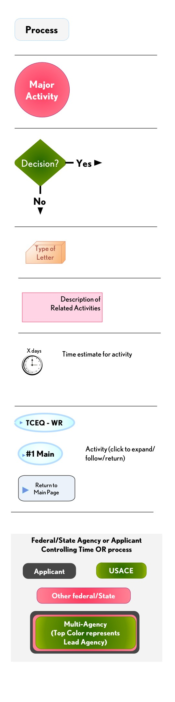

Legend & Acronyms
(DRAFT) Texas/Federal Regulatory Permitting Process Overview - October 2011
Agencies
- ACHD = Advisory Council on Historic Preservation
- EPA = US Environmental Protection Agency
- FWS = US Fish and Wildlife Service
- GLO = Texas General Land Office
- NRCS = Natural Resource Conservation Service
- SHPO = State Historical Preservation Office
- TCEQ = Texas Commission on Environmental Quality
- TPWD = Texas Parks and Wildlife Department
- TWDB = Texas Water Development Board
- TRC = Texas Railroad Commission
- USACE = US Army Corps of Engineers
Acronyms
- ARNI = Aquatic Resource of National Importance
- BMP = Best Management Plans
- CMZ = Coastal Management Zone
- CWA = Clean Water Act, 1972
- DE = USACE District Engineer
- EA = Environmental Assessment
- EIS = Environmental Impact Statement
- ESA = Endangered Species Act, 1973
- FA = Financial Assistance
- FR = Federal Register
- GP = General Permit
- JD = Jurisdictional Determination
- IP = Standard Individual Permit
- NHPA = National Historical Preservation Act, 1966
- LOP = Letter of Permission
- NEPA = National Environmental Policy Act, 1970
- NPDES = National Pollution Discharge Elimination System
- NPE = No Permit Required Exempt
- NPR = No Permit Required
- NWP = Nationwide Permit
- PAA = Public Application Acknowledgement
- PCN = Pre-Construction Notification
- RGP = Regional General Permit
- RPW = Relative Permanent Water
- SC = Special Conditions
- SPGP = Standard Programmatic General Permit
- SWP = State Water Plan
- SWF = USACE Fort Worth District
- SWG = USACE Galveston District
- SWT = USACE Tulsa District
- T&E = Threatened and Endangered
- TNW = Traditionally Navigable Water
- WoUS = Waters of the US
- WR = Water Rights